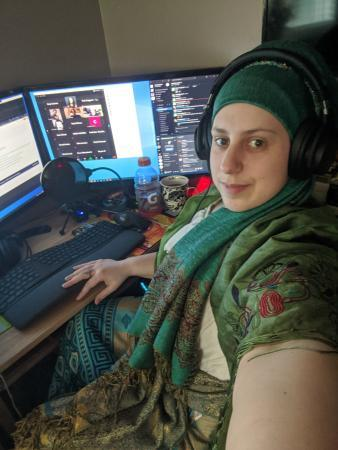

1 / 3

Hector Santiago III
2 / 3
.jpg)
Cesar Monsalud III
3 / 3

Lena Coker
Who we are
Development Team: Cesar, Hector, Helena, and Najm
Mentors: Charlie and Chris
PEARC 20 Hackathon Team: Charlie's Angels
The Mentors
Charlie Dey
Charlie is the Director of Training and Professional Development with the User Services group at TACC with a background in web development and scientific computing. Charlie's responsibilities at TACC include organizing, developing content, and building curriculums for TACC's academic course selection taught in conjunction with several departments at the University of Texas at Austin, as well as for TACC's professional development and educational training. Prior to joining TACC, he worked as a Senior Application Developer for the Carle Foundation, and as a computer science instructor at Parkland College in Champaign, IL. He was also a member of a specialized application development team at the University of Illinois and has also been a contracted research consultant for NASA Ames Research Center, studying computational immunology and bioinformatics. Charlie holds a Bachelor's Degree concentrating in Computer Science and Biology from Eastern Illinois University, and certifications in 3D programing and visualization.

Chris Lanclos
Christopher I. G. Lanclos is a computer science professor, a Ph. D. student, a lover of Christ, and an avid reader. His research focuses are Cyber Security, Software Engineering, and Computer Science education. Born in California, he relocated to Louisiana, where his family and roots are. He then made a life in Mississippi to pursue his dreams and further his education. He has a second home in Chicago. He enjoys ministry, teaching, comedy, anime (not cartoons), gaming, cooking, and the outdoors.

The Angels
Lena Coker
Lena Coker is an undergraduate at Washington State University Vancouver, where she majors in biology, neuroscience, and environmental science with minors in mathematics, zoology, chemistry, statistics, psychology, and environmental science and certifying in mathematical biology. She currently interns in the Community Ecology and the Conservation Biology laboratories on WSUV’s campus. After graduation, she plans to pursue a graduate degree in the fields of computational biology and neuroethology and behavioral ecology. Her passions include computational biology, community science, wildlife conservation, mathematical biology, behavioral modeling, and the biological basis of behavior in animals. Her favorite pastimes include reading and learning and practicing old world skills like basket weaving and blacksmithing.

Najm Mohamed
Najm's objective is to obtain his bachelor's degree in Computer Science and be able to qualify for an entry-level position related to his field of specialization. This will serve as a carrier growth and a change to his profession

Hector Santiago III
Hector is an experienced Information Technology Analyst who has been accepted into Science Gateway's Coding Institute for Summer 2020 and is aiming to become a software engineer